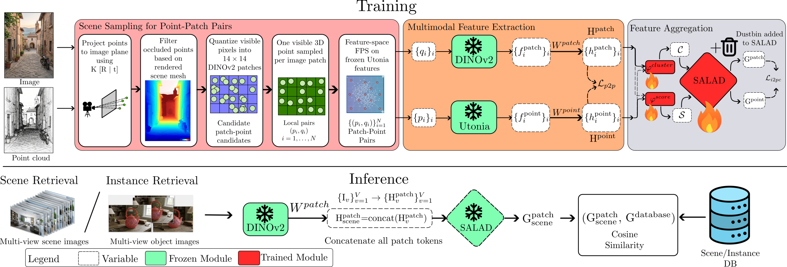
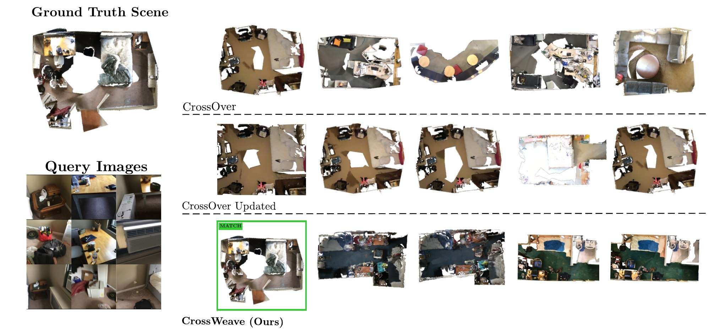
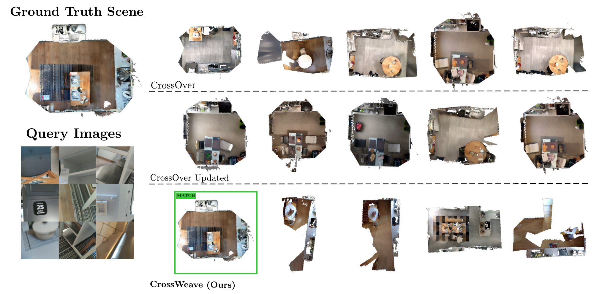
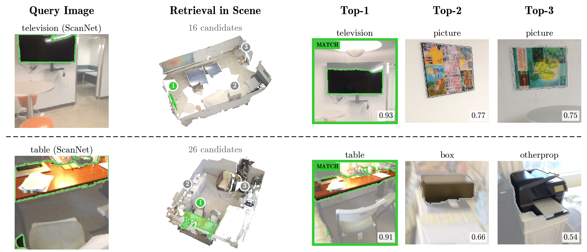

Cross-modal scene and instance retrieval aims to retrieve a corresponding 3D environment or object given query 2D images, serving as a foundational mechanism for spatial reasoning in robotics and AR/VR. Existing methods achieve this by learning alignment only at the level of whole scenes or objects, which provides no supervision for the fine-grained local structure within them. In this work, we show that supervision on a set of sparse 2D-3D correspondences, without scene- or instance-level contrastive objectives, is sufficient to train a single model for both scene- and instance-level retrieval. Specifically, we propose CrossWeave, a novel framework for cross-modal retrieval that learns sparse patch-point alignment, which alone outperforms existing methods. An optimal transport-based aggregator over the aligned features gives further gains by clustering structurally redundant regions, freeing descriptor capacity for semantically distinct local features. CrossWeave achieves state-of-the-art performance on both scene- and instance-level retrieval on ScanNet and 3RScan with a single model, whereas existing methods require separate models for each task. Our results suggest that whole-scene encoding is unnecessary for cross-modal retrieval and that sparse local correspondence supervision is a more effective and flexible alternative.

CrossWeave learns cross-modal retrieval representations from sparse image patch-3D point correspondences rather than scene- or instance-level labels. Given calibrated RGB-D observations and a reconstructed 3D map, visible patch-point pairs are obtained by projecting 3D points into the image plane, filtering occluded points using rendered depth, quantizing valid pixels into DINOv2 patch tokens, and selecting a compact semantically diverse subset using feature-space farthest point sampling. Frozen encoders extract local patch and point features, which are projected by learnable projection matrices Wpatch and Wpoint into a shared embedding space. A shared SALAD aggregator then maps variable-sized sets of local features into fixed-dimensional descriptors. Training combines a local patch-point Lp2p contrastive loss with an aggregated image-point-cloud contrastive loss Li2pc, preserving fine-grained alignment while organizing local evidence into retrieval-ready descriptors. At inference, the same encoders and projection heads serve both tasks: SALAD descriptors are used for scene retrieval and mean-pooled local features for instance retrieval.
Bold: best, underline: second best. † Trained on additional datasets (ArkitScenes + MultiScan). CrossOver (Updated): CrossOver retrained with the same Utonia 3D backbone as CrossWeave.
CrossWeave outperforms all baselines on both datasets at every rank. On ScanNet it reaches 61.54 Top-1 recall, 21.16 points above CrossOver (Updated). Since CrossOver (Updated) uses the same Utonia backbone, this suggests that the gain comes from sparse patch-point supervision rather than a stronger 3D encoder. On 3RScan, Top-1 recall rises from 23.72 to 46.50.
| Method | ScanNet | 3RScan | ||||
|---|---|---|---|---|---|---|
| Top-1 | Top-5 | Top-10 | Top-1 | Top-5 | Top-10 | |
| CrossOver | 22.44 | 61.86 | 75.32 | 19.11 | 58.60 | 77.07 |
| CrossOver† | 19.87 | 58.01 | 74.36 | 17.83 | 51.59 | 73.25 |
| CrossOver (Updated) | 40.38 | 90.06 | 96.47 | 23.72 | 67.31 | 85.26 |
| CrossWeave (Ours) | 61.54 | 99.36 | 100.0 | 46.50 | 85.99 | 92.36 |


Each query object is retrieved among the objects of its own scene. Top-k is computed within each scene and averaged over scenes; R@k% is the percentage of scenes in which at least k% of the objects are retrieved correctly at Top-1. The same single model gives the best instance retrieval: 78.77 Top-1 on ScanNet and 73.50 on 3RScan. The gap widens at stricter thresholds, with R@75% improving over CrossOver (Updated) by 18.27 points on ScanNet and 14.65 points on 3RScan.
| Method | ScanNet | 3RScan | ||||||||
|---|---|---|---|---|---|---|---|---|---|---|
| Instance Retrieval | Scene-Level Recall | Instance Retrieval | Scene-Level Recall | |||||||
| Top-1 | Top-3 | R@25% | R@50% | R@75% | Top-1 | Top-3 | R@25% | R@50% | R@75% | |
| CrossOver | 63.58 | 88.71 | 96.79 | 80.77 | 31.09 | 58.88 | 84.24 | 90.45 | 71.97 | 28.03 |
| CrossOver† | 63.42 | 88.55 | 96.79 | 80.77 | 31.09 | 57.09 | 84.58 | 89.81 | 63.06 | 24.84 |
| CrossOver (Updated) | 70.94 | 92.39 | 99.36 | 88.14 | 49.68 | 66.80 | 90.85 | 97.45 | 87.90 | 35.03 |
| CrossWeave (Ours) | 78.77 | 94.05 | 98.40 | 88.78 | 67.95 | 73.50 | 92.73 | 98.09 | 92.99 | 49.68 |

Lp2p alone already gives strong instance retrieval but weak scene retrieval. Adding Li2pc with mean pooling improves scene Top-1, and replacing mean pooling with SALAD improves it further, so both the aggregation objective and the aggregation module matter for scenes. Mean pooling with both losses gives the highest instance Top-1, but its scene Top-1 is 9.3 (ScanNet) and 15.9 (3RScan) points lower; the HYBRID model gives the best trade-off across both tasks.
| Agg. | Li2pc | Lp2p | Feats | ScanNet | 3RScan | ||||
|---|---|---|---|---|---|---|---|---|---|
| Scene Top-1 | Inst. Top-1 | Inst. R@75% | Scene Top-1 | Inst. Top-1 | Inst. R@75% | ||||
| Mean | ✗ | ✓ | LOCAL | 47.12 | 78.96 | 70.51 | 27.39 | 73.30 | 47.13 |
| Mean | ✓ | ✓ | LOCAL | 52.24 | 79.63 | 71.15 | 30.57 | 73.62 | 49.04 |
| SALAD | ✓ | ✗ | SALAD | 57.37 | 73.33 | 56.09 | 43.95 | 66.98 | 38.22 |
| SALAD | ✓ | ✓ | HYBRID (CrossWeave) | 61.54 | 78.77 | 67.95 | 46.50 | 73.50 | 49.68 |
Aggregated SALAD features work best for scene retrieval, while local features work best for instance retrieval. CrossWeave therefore uses SALAD for scenes and local features for instances (HYBRID).
| Feats | ScanNet | 3RScan | ||||
|---|---|---|---|---|---|---|
| Scene Top-1 | Inst. Top-1 | Inst. R@75% | Scene Top-1 | Inst. Top-1 | Inst. R@75% | |
| SALAD | 61.54 | 77.04 | 66.67 | 46.50 | 70.01 | 43.31 |
| LOCAL | 48.40 | 78.77 | 67.95 | 28.66 | 73.50 | 49.68 |
| HYBRID (CrossWeave) | 61.54 | 78.77 | 67.95 | 46.50 | 73.50 | 49.68 |
Ablation tables mark only the best result in bold. Agg.: aggregation used during training (mean pooling or SALAD). Li2pc: image-point-cloud aggregation loss; Lp2p: local patch-point alignment loss. Feats: SALAD (aggregated), LOCAL (mean-pooled patch and point features), or HYBRID (SALAD for scene, LOCAL for instance). The feature ablation uses CrossWeave trained with both losses.
Following the SceneGraphLoc protocol, each query image is ranked against N candidate scenes; Top-k is the percentage of queries with the correct scene in the top k. SceneGraphLoc relies on ground-truth scene graphs at inference, whereas CrossWeave needs only a single image and a raw point cloud. CrossWeave still matches it at Top-1 with 10 candidates and exceeds it at Top-5 and Top-10 for both pool sizes, trailing only at Top-1 with 50 candidates.
| Method | 10 candidates | 50 candidates | ||||
|---|---|---|---|---|---|---|
| Top-1 | Top-5 | Top-10 | Top-1 | Top-5 | Top-10 | |
| SceneGraphLoc | 53.60 | 81.90 | 92.80 | 30.20 | 50.20 | 61.20 |
| CrossOver | 46.00 | 77.97 | 90.58 | 18.69 | 39.16 | 51.62 |
| CrossWeave (Ours) | 53.60 | 93.10 | 100.0 | 27.50 | 60.20 | 76.50 |
We replace ground-truth instance masks with imperfect ones. 2D masks come from MobileSAM prompted with a single click inside the object, keeping the prediction with the highest IoU to the ground truth. 3D masks are corrupted with boundary bleed into neighboring background or objects and contiguous chunk dropout, at a similar IoU degradation. Under combined 2D+3D noise, Top-1 drops by about 6.5 points on ScanNet and 12.2 points on 3RScan, with most of the loss at the stricter R@75% threshold.
| Masks | ScanNet | 3RScan | ||||||||
|---|---|---|---|---|---|---|---|---|---|---|
| Top-1 | Top-3 | R@25% | R@50% | R@75% | Top-1 | Top-3 | R@25% | R@50% | R@75% | |
| Ground truth | 78.77 | 94.05 | 98.40 | 88.78 | 67.95 | 73.50 | 92.73 | 98.09 | 92.99 | 49.68 |
| Noisy 2D | 75.75 | 93.02 | 97.44 | 88.14 | 62.50 | 68.00 | 89.95 | 97.45 | 88.54 | 34.39 |
| Noisy 3D | 75.33 | 92.91 | 97.12 | 87.50 | 63.46 | 65.65 | 88.79 | 96.82 | 84.08 | 32.48 |
| Noisy 2D + 3D | 72.29 | 91.86 | 97.12 | 85.90 | 55.45 | 61.28 | 86.11 | 95.54 | 76.43 | 26.75 |
Since CrossWeave aggregates any number of views, we sweep the number of query images for scene retrieval. Most of the gain comes between 3 and 10 views; beyond 10 views, Top-1 recall still improves by up to 2.56 points on ScanNet and 4.46 points on 3RScan. The main results use 10 views.
@inproceedings{warrier2026crossweave,
author = {Warrier, Aadith and Punnavajhala, Gnana Prakash and Tourani, Siddharth and Khan, Muhammad Haris and Sharma, Avinash and Krishna, Madhava},
title = {CrossWeave: Cross-Modal Scene and Instance Retrieval from Sparse 2D-3D Alignment},
booktitle = {Advances in Neural Information Processing Systems (NeurIPS)},
year = {2026},
}